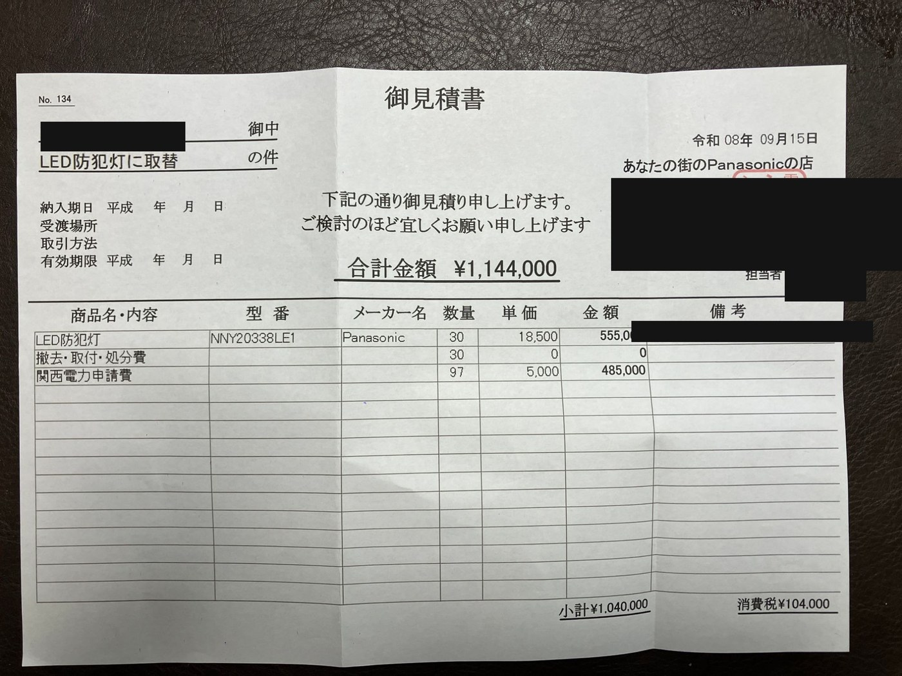

こんにちは、まっさんです。
町会費が少し余っていることもあり、これを機に町内の街灯（防犯灯）を全部LEDに替えられないかと思い立ちました。さっそく見積もりを取ってもらったのが、こちらです（地域名・業者情報は伏せています）。

LED防犯灯そのものは30台で555,000円（1台18,500円）。撤去・取付・処分費は無料でした。ここまでは、まあこんなものかなという感覚です。
驚いたのが、もう一つの項目です。関西電力申請費、97件で485,000円。正直、これは完全に想定していませんでした。
しかも、この申請は今回交換する30台分だけじゃなく、既存の街灯97件すべて分が必要でした。取り替えていない街灯も含めて、契約自体を見直さないといけないということです。1件5,000円としても、ここだけで485,000円。見積もりの半分近くが、この申請費というのは正直予想外でした。
小計1,040,000円、消費税104,000円で、合計1,144,000円。町会費で賄うには、なかなかのボリュームです。全部を一気にLED化するのか、優先度の高い場所から少しずつ進めるのか。このあたりは、役員さんたちと相談して決めていこうと思います。
ほな、また。